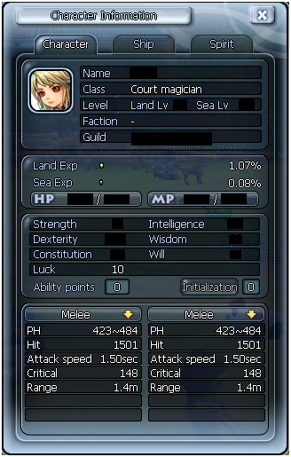

Movistar Arnau

Movistar Arnau: Que no te engañe su amigable apariencia, el movistar Arnau acecha en la noche por las mas grandes ciudades con un troncho gordo de fibra óptica con el que ahorca a sus enemigos simulando un suicidio. Por el día hace instalaciones de red en empresas ya que le fascina el tema aunque a aquellos que poseen fibra Jazztel los apunta en una libreta muy sospechosa. A pesar de todo lo mencionado el verdadero enigma no es la intención de esa libreta, sino.... ¿QUE ES EL SUBNETING?. Nota: Su mayor debilidad es el 5G, está convencido de que el proyecto Starlink no es más que un malévolo plan de Elon Musk para acabar con su reinado del terror